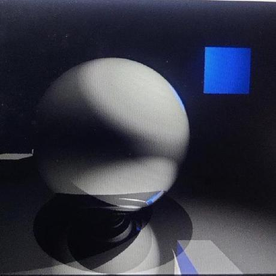
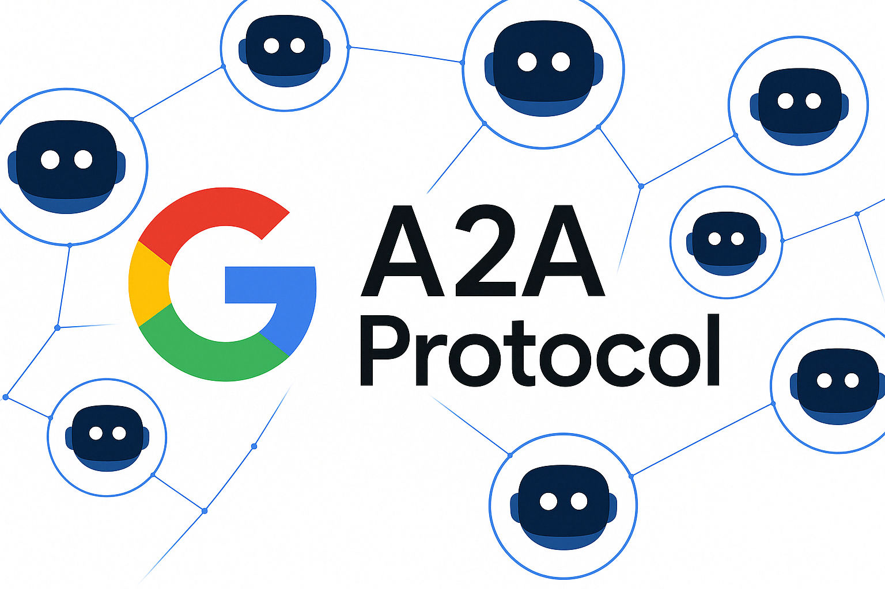

|
Danish Javed Hi! I am Danish. I'm a software engineer and developer at Silence Labs passionate about systems programming, and building innovative projects. I graduated from IIT Delhi with a B. Tech. in Computer Science and Engineering in 2024. I have previous internships experience at Kognitos, a fast growing startup and at Adobe Research, a leading research lab in the world. I also have a keen interest in mathematical problem solving, finance and algorithms and am open to learning and new opportunities in quantiative finance and machine learning as well. Right now, Im trying to start a blog. In my free time, I like to read books and online articles (Reddit et al.) on any random topic inc. finance/current affairs/pop culture, play chess (reached a maximum of 2500 on lichess), go for a swim/a sprint run, hangout with my friends and family, etc. Im also interested in trying out extreme adventure sports like skiing, wavesurfing, bicycle parkour, etc. |

|
ProjectsHere are some of my projects covering areas like rendering, simulation, and application development. Some projects are highlighted. |
|

|
RayTracer - Path Tracing Renderer
Danish Javed C++, OpenGL, SDL2, 2024 GitHub A path tracing renderer that creates photorealistic renderings of 3D scenes. Supports multiple geometric primitives (spheres, planes, cuboids), three material types (diffuse, metal, transparent), and advanced light transport effects including soft shadows, recursive reflections/refractions, total internal reflection, indirect illumination, and caustics. |

|
Cache-Simulator - N-way Set Associative Cache
Danish Javed C++, 2024 GitHub An N-way set associative cache simulator modeling a two-level cache hierarchy (L1 and L2). Processes memory access trace files and simulates how requests flow through the cache system to DRAM. Features configurable parameters for block size, cache sizes, and associativity levels, with comprehensive statistics tracking for reads, writes, hits, and misses. |
|

|
Dark Pools - A2A Multiagent System
Danish Javed Python, Rust, A2A SDK, 2024 GitHub A dark pools trading system demonstrating secure, private equity trading through multiple autonomous agents. Features confidential order matching, real-time market data integration using yfinance, and multi-agent coordination with independent trading logic. Includes Rust backend with relay server and order processing, plus position and balance management for trading participants. |

|
Python FFI for Async Rust Functions
Danish Javed Python, Rust, Tokio, 2024 GitHub A practical demonstration of creating Python wrappers for asynchronous Rust functions using FFI (Foreign Function Interface). Features C-compatible FFI wrappers that convert async Rust functions into synchronous C exports using Tokio runtime, with examples including async delays, Fibonacci calculation, and error handling. Uses ctypes for Python-Rust library interaction. |
BlogThoughts, tutorials, and writeups on various technical topics. |

|
Inside Python
December 2024 A comprehensive guide to Python's advanced features including modules, lambdas, decorators, iterators, and regular expressions. Covers @staticmethod, @classmethod, abstract base classes, context managers, and more. |

|
Inside C++
December 2024 An in-depth exploration of C++ virtual functions, compiler optimizations, and performance considerations. Covers dynamic polymorphism, function inlining, assembly code analysis, const correctness, and the differences between GCC and Clang compilers. |
Miscellanea |
Certifications |
AWS Cloud Technical Essentials — foundational concepts for building and scaling with AWS services.
Migrating to the AWS Cloud — strategies and tooling for planning and executing cloud migrations.
Fundamentals of AI Agents Using RAG and LangChain — building retrieval-augmented agents with LangChain workflows.
Get Started with Redis — core Redis data structures, persistence, and deployment basics.
Redis for Python Developers — practical Redis patterns and client techniques in Python.
Fundamentals of Backend Engineering — backend architecture, RESTful design, and system design foundations.
|
Honors & Achievements |
Secured All India Rank 69 in JEE Advanced 2020 among 150K+ candidates, placing in top 0.03% nationally
Secured 99.82 percentile in CAT 2024 among 300K+ candidates with zero preparation
National-level Olympiad Qualifier: Successfully cleared prestigious olympiads including RMO, NSEA, NSEC and KVPY SA & SX
International Recognition: Earned bronze medal at OPhO 2020 finishing 18th across 340 global teams of high school and UG students; competition sponsored by firms like Jane Street and Citadel and conducted by PhysOly
Algorush: Stood top 15 nationally in a competitive programming contest organised by IISc Bangalore
 Codeforces: Solved 250+ algorithmic problems with peak rating of 1637 (youwoo), demonstrating strong problem-solving and optimization skills
Codeforces: Solved 250+ algorithmic problems with peak rating of 1637 (youwoo), demonstrating strong problem-solving and optimization skills
 LeetCode: Completed 300+ coding challenges (lemonwatermelon), covering data structures, dynamic programming, and system design
LeetCode: Completed 300+ coding challenges (lemonwatermelon), covering data structures, dynamic programming, and system design
|
|
|